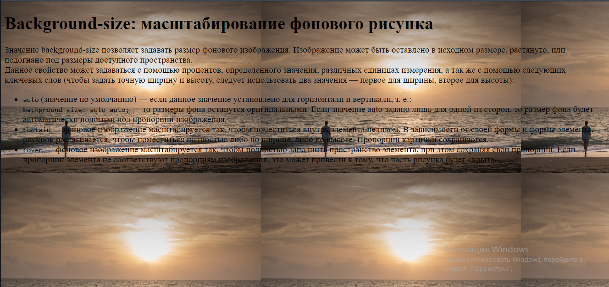
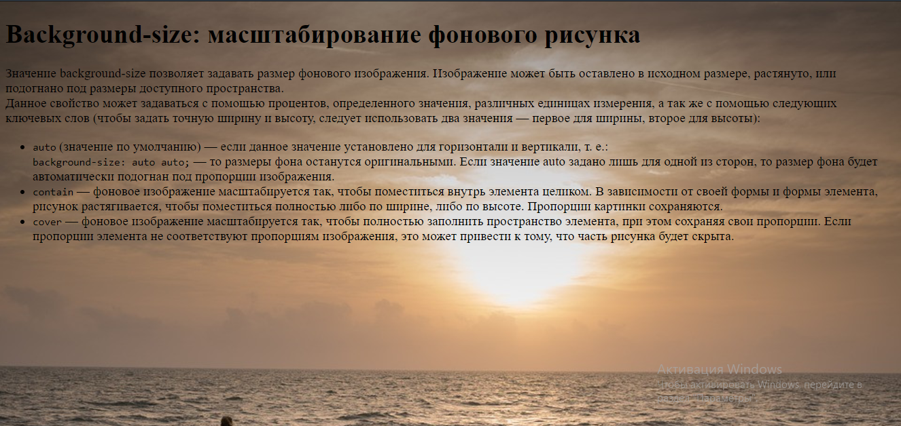

Значение background-size позволяет задавать размер фонового изображения. Изображение может быть оставлено в исходном размере, растянуто, или подогнано под размеры доступного пространства.
Данное свойство может задаваться с помощью процентов, определенного значения, различных единицах измерения, а так же с помощью следующих ключевых слов (чтобы задать точную ширину и высоту, следует использовать два значения — первое для ширины, второе для высоты):
auto (значение по умолчанию) — если данное значение установлено для горизонтали и вертикали, т. е.:background-size: auto auto; — то размеры фона останутся оригинальными. Если значение auto задано лишь для одной из сторон, то размер фона будет автоматически подогнан под пропорции изображения. Рис.1 background-size: auto auto;contain — фоновое изображение масштабируется так, чтобы поместиться внутрь элемента целиком. В зависимости от своей формы и формы элемента, рисунок растягивается, чтобы поместиться полностью либо по ширине, либо по высоте. Пропорции картинки сохраняются.

Рис.2 background-size:contain;cover — фоновое изображение масштабируется так, чтобы полностью заполнить пространство элемента, при этом сохраняя свои пропорции. Если пропорции элемента не соответствуют пропорциям изображения, это может привести к тому, что часть рисунка будет скрыта.

Рис.3 background-size: cover;